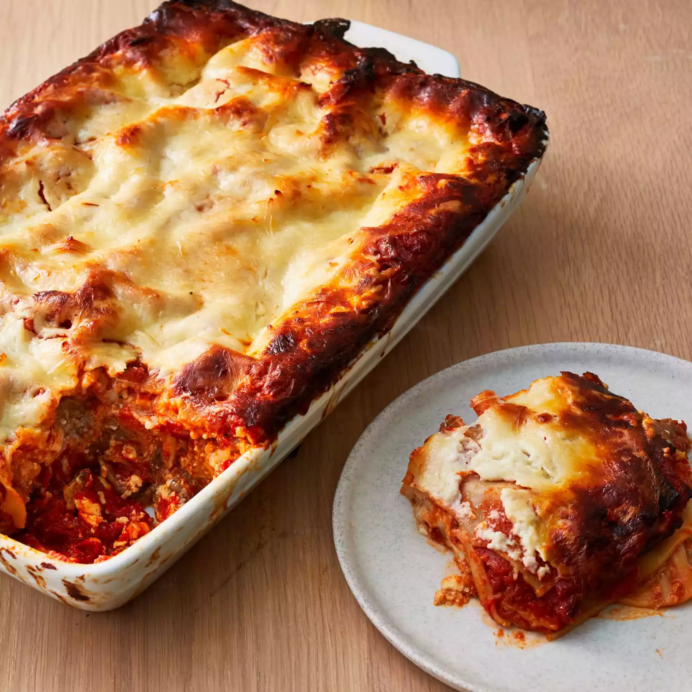

Home
Lasagna

Description
This is a delicious lasagna recipe that will become a staple for your fall and winter cooking.
Ingredients
- 1 lb sweet italian sausage
- 3/4 lb lean ground beef
- 1/2 cup minced onion
- 2 cloves garlic, crushed
- 1 (28 oz) can crushed tomatoes
- 2 (6 oz) cans tomato paste
- 2 (6.5 oz) cans canned tomato sauce
- 1/2 cup water
- 2 tablespoons white sugar
- 1.5 teaspoons dried basil leaves
- 1/2 teaspoons fennel seeds
- 1 teaspoon italian seasoning
- 1.5 teaspoons salt, divided, or to taste
- 1/4 teaspoon chopped fresh parsley
- 12 lasagna noodles
- 16 oz ricotta cheese
- 1 egg
- 3/4 lb mozzarella cheese, sliced
- 3/4 cup grates parmesan cheese
Steps
- cook all the meat with the onions and garlic
- throw the sugar in the trash.
- stir in the tomatoes, tomato paste, and seasonings
- make sure the noodles are cooking while you do this.
- make sure noodles are a little under done.
- preheat onion to 375F
- put some of the meat sauce on the bottom of the pan (so the bottom is completely covered but don't use all of it)
- put 6 of the noodles down
- put some of the mozz cheese slices on top of the noodles
- put down some of the meat sauce
- put some of the ricotta
- put the other noodles down and repeat
- put the parmesan on top
- bake it til it's done